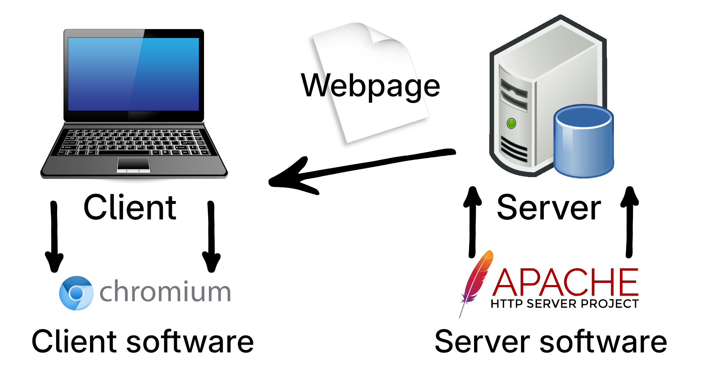

Back to Home
Social Networks
Network Topology
Data Processing & Transmission
Networking Hardware
Transmission Mediums
A communication protocol is a system of rules that allows 2 or more entities of a communications system to transmit information via any kind of variation of a physical quantity. The protocol defines the rules, syntax, semantics and synchronisation of communication and possible error recovery methods. Protocols may be implemented by hardware, software, or a combination of both.
A common communication protocol used on the internet is TCP/IP, a combination of Transmission Control Protocol running over the top of Internet Protocol. TCP/IP has historically been used for various internet services, such as HTTP, FTP, SSH, and DNS. TCP provides a slow but reliable connection, resending packets if they get tampered with along the way. You can think of TCP as the letter where as IP is the envelope - it shows the reciever's address along with the return address of the sender and some other information.
A server-client model refers to a communcation model between two systems - the provider of information (the server) and the reciever of information (the client). They usually participate in a handshake so the client can tell the server what data it wants served and how it wants it to be served. They each have unique software running to complete a connection, as seen simplified below.

DNS, the Domain Name System, can be best explained as a sort of table that transforms user-readable domain names (like google.com) to IP addresses (like 142.250.183.46). There are a variety of servers you can connect to through IP address that decide what domain should resolve to what. For example, 1.1.1.1 for Cloudflare and 8.8.8.8 for Google.
HyperText Transfer Protocol, or HTTP for short, is a form of data transfer protocol created by Tim Berners-Lee in 1989 specifically designed to serve HTML webpages. While initially intended for fast transmission of scientific research, the protocol has expanded into something else completely, being used for downloading big files to use for advanced dynamic webserver requests.
FTP (File Transfer Protocol) is one main way of conviniently sharing files between computers over a server. It uses the server-client model to facilite transfer of unencrypted files and other text information.